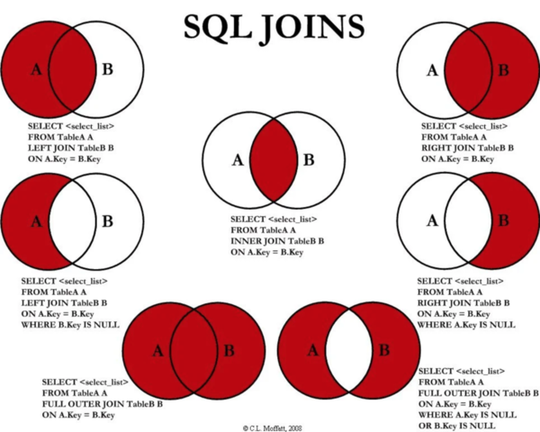

In order to get started, make sure you have your environment set up. To do this, I recommend referencing these links:
Before we dive into writing SQL queries, it's important to understand what SQL and MySQL are. SQL represents the syntax used in manipulating relational databases, whereas MYSQL is a RDBMS (Relational Database Management System). In other words MySQL uses Structured Query Language to manipulate databases.
Shown below are two tables within a database. The table on the left shows the Players trying out for sports teams
while the table on the right shows the coaches for each sport.

The database shown above is a relational database because the two tables 'Players', and 'Coaches' are related by a common field 'Sport'. Often times databases will have tables that are related to each other and through SQL queries we can retrieve information from these tables.
Let's start off by creating the two tables we'll be querying in this lesson. The two tables will be
called '' and ''. We can make use of the CREATE TABLE and INSERT commands
to do this.
CREATE TABLE Players(
Name VARCHAR(20) PRIMARY KEY,
Age INT,
Experience INT,
Sport VARCHAR(20)
);
CREATE TABLE Coaches(
Name VARCHAR(20) PRIMARY KEY,
Age INT,
Sport VARCHAR(20)
);
INSERT INTO Players VALUES('Derek',18,2,'Soccer');
INSERT INTO Players VALUES('Bob',19,1,'Basketball');
INSERT INTO Players VALUES('Michael',18,4,'Basketball');
INSERT INTO Players VALUES('Tom',16,3,'Golf');
INSERT INTO Players VALUES('Fred',14,1,'Soccer');
INSERT INTO Players VALUES('Carl',18,0,'Golf');
INSERT INTO Players VALUES('Ivan',21,0,'Basketball');
INSERT INTO Players VALUES('Brian',13,1,'Basketball');
INSERT INTO Coaches VALUES("Leo",34,'Soccer');
INSERT INTO Coaches VALUES("Brian",36, 'Basketball');
INSERT INTO Coaches VALUES("Gary",49,'Golf');
NOTE: You will have to run each query seperately.
We first created two tabels 'Players' and 'Coaches'. Inside each CREATE TABLE block
are the names and datatypes of each column of each table. The PRIMARY KEY signifies the
ID of each entry, similar to an index. Relational databases may also have a FOREIGN KEY
that signifies a column or attribute that is the PRIMARY KEY of another table. After creating
the tables we then INSERT INTO each table specific VALUES, this is how you populate
a SQL table.
There are many other commands we can use to manipulate our tables before querying them. I've outlined some of them below.
DESCRIBE Players; # Summarizes the Players
DROP TABLE Players; # Deletes the Players table
ALTER TABLE Players ADD Height INT; # Adds a "Height" attribute to Players
ALTER TABLE Players DROP COLUMN Height; # Deletes the "Height" attribute from Players
UPDATE Coaches SET Age = 40; # Updates the ages of coaches to 40
DELETE FROM Players WHERE Name = 'Tom'; # Deletes Tom from Players
SELECT
Querying a database is a fancy way of saying you want to retrieve information
from a database. SQL Queries make use of a powerful command called SELECT, it allows
us to retrieve specific information from our database. Let's first start off by selecting all the data from
our Players tables. We can do this using SELECT * FROM Players;. After running this, you should
see the Players table. The SELECT command is where we put the attributes you're hoping to retrieve.
the FROM command is used to signify which table you plan on selecting your attributes from, and a WHERE command
is used to provide a condition to determine which specific entries from those columns you hope to retrieve. Here's an example of one of these
queries.
SELECT Name, Sport FROM Players WHERE Age >= 18;

In the above query, we selected the Name and Sport of each person in the Players table whose age
is at least 18. We could also add a ORDER BY Sport after the WHERE command
in order to see our derived table sorted by Sport.
If we were instead only interested in the sports that have players over 18, we could take out the Name attribute
from our SELECT command. However, when running this query, you'll notice sports come up multiple times.
We can get around this by using the DISTINCT keyword.
SELECT DISTINCT Sport FROM Players WHERE Age >= 18 ORDER BY Sport;
Let's do one more example. What if we wanted to see all the players who play either Soccer or Golf who are
between 14 and 17? We can do this using the following query.
SELECT Name
FROM Players
WHERE (age BETWEEN 14 AND 17) AND (Sport IN ('Soccer', 'Golf'));
Functions
Although it's useful to be able to retrieve entries from our database, sometimes we may be interested in
characteristics of our data. SQL keywords such as AVG, COUNT, SUM, MAX, MIN can be used to
return characteristics of a column. Here we find some summary statistics of the
basketball players' age. We use the AS keyword to rename the columns in our derived table.
SELECT AVG(Age) AS Average, MAX(Age) AS Maximum, MIN(Age) AS Minimum, COUNT(AGE) AS 'Count', SUM(AGE) AS 'Sum'
FROM Players
WHERE Sport = 'Basketball';
What if we wanted to filter our data based on the characters within a VARCHAR attribute? If we wanted
to find the average age of the players whose name ends with the letter l we can use SQL Wildcards which
make use of the LIKE keyword.
SELECT AVG(Age) AS Average FROM Players WHERE Name LIKE "%l";
The LIKE keyword compares a VARCHAR to a specified pattern. The %
in "%l" means and sequence of characters that ends with l. The % is what's called
a Wildcard Character. These are often helpful when looking for specific patters within non-numerical
data. A name starting with M would use the wildcard "M%", while a name whose second letter is r would
use "_r%". You can read more about wildcards here.
GROUP BY
Sometimes we're interested in querying data by categories or group. To do this, we can make use
of the GROUP BY command. Let's say we were interested in the number of players for each sport.
We would have to count the number of players grouped by Sport. In this example, we ordered
the derived table in reverse-alphabetical order.
SELECT Sport, COUNT(Name) AS Total
FROM Players
GROUP BY Sport
ORDER BY Sport DESC;

One confusing part of the GROUP BY command is knowing when to use WHERE versus
HAVING for conditional queries. WHERE is used before the GROUP BY
command whereas HAVING is used after the GROUP BY clause. Here are a couple examples to help.
SELECT Sport, COUNT(Name) AS Total
FROM Players
WHERE Age >= 18
GROUP BY Sport
ORDER BY Sport DESC;
SELECT Sport, AVG(Age) AS 'Average Age'
FROM Players
GROUP BY Sport
HAVING COUNT(Name) > 2
ORDER BY Sport DESC;
In our first query, we're filtering entries based on the number of players who are at least 18.
This means we're filtering out players before they're grouped. Whether or not a player
is 18 years old is irrelevant to what sport he/she plays and thus we can make use of the
WHERE keyword. However, in our second query, we're filtering our results based on
how many players there are in each sport, or in other words, after they're grouped, which is why we use
the HAVING clause.
UNIONS & JOINS
Unions and joins are incredibly useful in querying data from tables that
can be combined. A UNION is an easy way to combine multiple SELECT statements.
Here's an example.
SELECT Name, Age
FROM Players
WHERE Age > 18
UNION
SELECT Name, Age
FROM Coaches
WHERE Age > 40;

In this example, we selected both the players who are over 18 and the coaches who are over 40.
Unions are convenient when you want to create new rows in your table. The query result is a derived table
that simply stacks the table with players over 18 on top of the table of coaches over 40. If instead of this
we were interested in combining columns of data. We could make use of the JOIN command.
SELECT Players.Name as 'Player Name', Coaches.Name as 'Coach Name'
FROM Players
LEFT JOIN Coaches
ON Players.Sport = Coaches.Sport;
In the query above, we're retrieving tha names of each player along with their coaches.
Their coaches are determined by their sport which is why we joined ON Players.Sport = Coaches.Sport.
However, I included a LEFT JOIN in my query when combining both tables, what is this? A LEFT JOIN
is a method of joining two tables. It starts with each entry in the left table (Players) and then matches it to a value on the right
table (Coaches) based on their shared attribute (Sport), a LEFT JOIN is the same as as
LEFT OUTER JOIN. The best way to understand the various joins is through venn diagrams. Here's a helpful
and easy diagram I found on Reddit that shows the different types of joins.

To know when to use each type of join, it's important you understand how they work conceptually. The Venn Diagram will help
but the best practice is to try each join out yourself.
Sometimes the queries we write will be nested. A nested query, sometimes called a subquery, is a
SELECT statement within the WHERE clause of another query. You can
think of it as a query that's based on another query. We'll start off with a simple example. Let's say we wanted
a list of players with the same name as a coach. We could this simply by:
SELECT DISTINCT Name
FROM Players
WHERE Name IN (SELECT DISTINCT Name FROM Coaches);
After running this query, we get Brian as an output, the only common name between the two tables. In this example
the subquery is "SELECT DISTINCT Name FROM Coaches" within the "SELECT DISTINCT Name FROM Players WHERE..." query.
Now let's do a slightly more complicated nested query. How could we query the Names and Sports of the coaches who coach teams
where the average age is at least 17 or that has more than two players. Although this sounds complex, its often easiest
to break down the problem into smaller parts. The first part being how to query the Name and Sport of Coaches within the Coach table.
The next part is figuring out how to query the sports whose players meet the conditions. The last part requires the use of the
GROUP BY clause, as illustrated below.
SELECT Name, Sport
FROM Coaches
WHERE Sport IN
(SELECT Sport
FROM Players
GROUP BY Sport
HAVING COUNT(Name) > 2 OR AVG(Age)>=17);
Subqueries are extremely useful when using SQL and can get complicated very quickly. My strategy is to take the query you're trying to write, and break it down into its queries and subqueries individually if possible. From there you can combine your queries and subqueries to reach your final query. Remember, practice is key.
Even though we've learned the most important and "fundamental" SQL commands, we haven't worked with large datasets, complex nested queries, or certain topics such as table aliases and triggers. It's helpful to make your own tables and try to create queries yourself in order to practice. Nevertheless, here are some references I think are particularly useful.
In order to get started, make sure you have your environment set up. In order to do this, I recommend referencing these links:
The first thing we have to do is load our data into our Jupyter Notebook. To open up your Jupyter Notebook,
simply open up terminal and type jupyter notebook. A full guide on the interface can be found
here.
Let's first import pandas into our notebook. We'll reference it as "pd" for simplicity.
import pandas as pd
Pandas is a powerful tool used for manipulating data providing functioanlities to make working with out data easier. The Excel file referenced in this part of the tutorial can be downloaded
here (I need to actually put the download link in).. The first powerful tool in pandas we'll make use of is a dataframe.
You can think of a dataframe like a spreadsheet or data table. It's a data structure representing a two-dimensional table. Let's read in our data from Excel into a dataframe object and look at the first few rows of our data.
stock_data = pd.read_csv('Sample_Stocks.csv')
stock_data.head()

The head(n) function displays the first few rows of our table. You can specify the last few rows using tail(). Placing a integer parameter (head(n) or tail(n)) displays the first or last n rows. We can get summary statistics of our data as well through the describe() function.
stock_data['HINDEX'].describe() # Describes the HINDEX attribute
stock_data.groupby(by='Stock').describe() # Describes all attributes grouped by 'Stock'
stock_data.groupby(by='Stock')['Volume'].describe() # Output shown below

After looking through the columns, you may realize "HINDEX" is relatively useless as its always zero. We can delete
this column using:
stock_data.drop(columns = ['HINDEX'])
Using SQL, we were able to query a database in order to retrieve specific information. Thankfully, pandas provides a similar functionality. Let's
say we were interested in finding all the entries of stock A with a price of over $46.00. We can do this by using conditionals within
the pandas loc function. Let's try this out.
stock_data.loc[(stock_data['Stock']=='A') & (stock_data['Price']>46)]
When we run this, we get an error message saying TypeError: '>' not supported between instances of 'str' and 'int'
What this message is telling us is we're trying to compare a string type variable to an integer. We'll have to
convert the 'Price' column into floating point numbers before running our query. We can make use of the replace() and astype() functions.
stock_data['Price'] = stock_data['Price'].replace('[\$,]', '', regex=True).astype(float)
stock_data.loc[(stock_data['Stock']=='A') & (stock_data['Price']>46)]

So far, we've looked into the very basics of pandas. We'll continue to make use of this library in future lessons which is why I highly recommend getting more comfortable with the pandas library and its various functionalities. This will make understanding future lessons much easier. Feel free to utilize the references provided in the Useful Resources section.
Part of cleaning your data is dealing with missing values. One way to detect if your dataset has missing values
is to use the .info() function. Using the dataset from the previous lesson, stock_data.info() outputs the following:

dropna()
We can see our dataset only has 35 non-null price values and 37 non-null volume values out of 40 total values.
One way to deal with missing values is to delete the rows that have at least one value missing. Using pandas,
this can be done through the dropna() function, which will return a dataframe with all rows containing
missing values deleted.
fillna()
However, deleted entries may not always be the best option, especially when
the entry has other important information we might want to keep. This leads us to our first method of handling
missing data using the fillna() function. The fillna() function
allows us to quickly find all NaN values and replace them using a specified method. You can learn more about
fillna() here.
One way to use fillna() is with the parameter method = 'ffill' . This parameter
propogates all non-null values forward, replacing each null value with the previous non-null value.
Similarly method = 'bfil' does the opposite.
stock_data.drop(columns = ['HINDEX'], inplace = True)
stock_data

Previously the values for 'Price' and 'Volume' for the entry at index 12
were both NaN. After using the ffill method of fillna() the values for 'Price'
and 'Volume' were replaced with the 'Price' and 'Volume' values for the entry at index 11. A snippet showing this change is
shown above. The inplace parameter in the above function call signifies that the outputted dataframe
should replace our current dataframe.
interpolate()
Another way to fill missing values, especially useful for time-series data, is the interpolate method. Interpolating data
is very helpful and there are many ways to do it. One way of the simplest ways that does not involve the fitting
of a complex model to our data is using the interpolate() function. It defaults to a linear method
which replaces all missing values with the linear average of the non-null values surrounding it. It can be called on
an entire dataframe object like shown below, however, is often useful for individual serieses as well (like our 'Price' column alone). Read more about that
here.
stock_data.interpolate(method='linear', inplace=True)

So far, we've looked into the basics of manipulating our data with the pandas library. The following links and guidelines are extremely useful and I highly recommend looking into them to get a better idea of what we've learned: